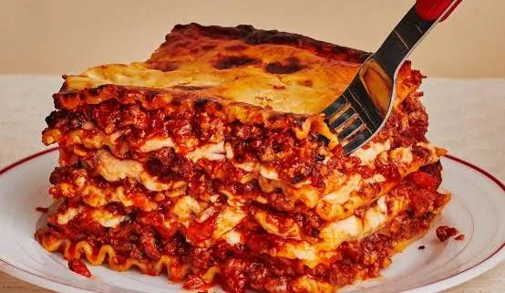
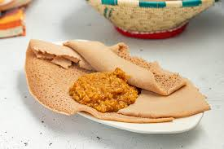
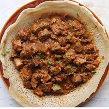

1. Lasagna

Lasagna is a classic Italian baked pasta dish consisting of layers of wide, flat pasta sheets alternated with various fillings. While variations abound, the traditional Lasagna alla Bolognese features a rich meat ragù, creamy béchamel sauce, and Parmigiano-Reggiano.
Main Ingredients
- Pasta sheets
- Cheese
- Tomato sause
- Minced meat
2. Lentiles with Injera(East-African Sour Flatbread)

Lentils with injera is a flavorful, communal dish from Ethiopia and Eritrea that is as much about the experience as the taste. It’s a perfect harmony of spicy, savory, and tangy notes.
Main Ingredients
- The Lentils: Usually red lentils, they are simmered until they almost melt into a thick, velvety puree.
- The Injera: This sourdough flatbread has a unique spongy texture filled with tiny air bubbles (called "eyes").
- Spices
- Onions
3. Zigni with Injera

Zigni with Injera is the national dish of Eritrea, consisting of a bold, spicy stew traditionally served over a large, spongy sourdough flatbread called Injera.
Main Ingredients
- Zigni (The Stew): A rich, slow-cooked stew typically made with beef, though lamb, goat, or chicken (Zigni Derho) can also be used. Its signature deep red color and fiery heat come from a heavy dose of berbere, a complex spice blend containing chili, garlic, ginger, and cardamom.
- The Injera: This sourdough flatbread has a unique spongy texture filled with tiny air bubbles (called "eyes").
- Tomatoes
- Onions
Learn more about these traditional foods here:Eritrean_cuisine